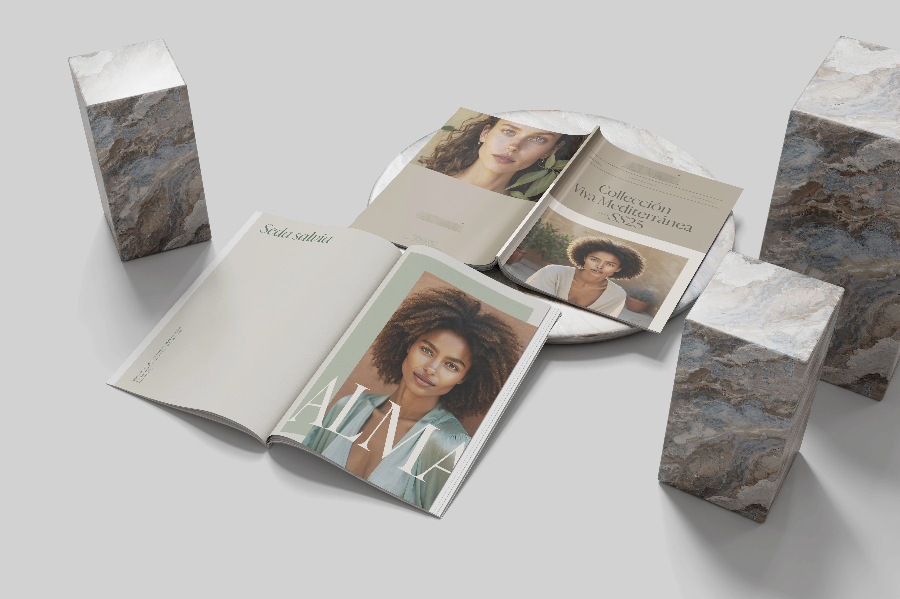
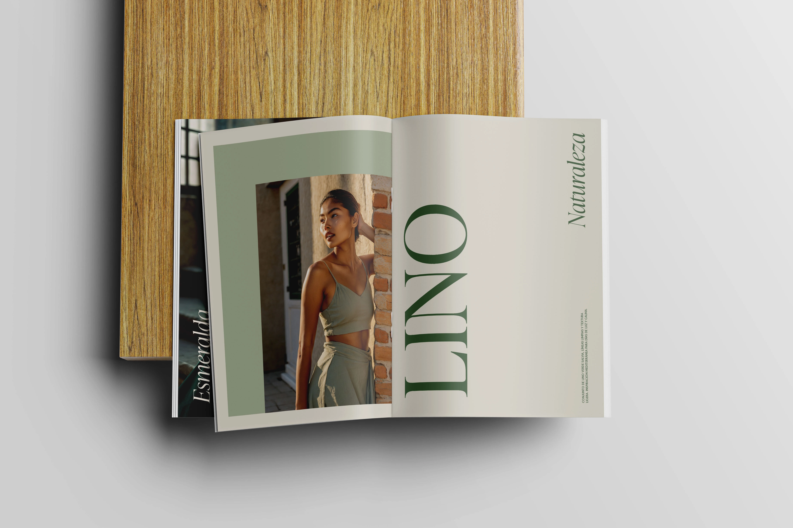

INTRO
Un brand di moda femminile con attenzione alla sostenibilità doveva presentare la collezione SS25 con un lookbook capace di elevare percezione e desiderabilità, affiancato da un Instagram Kit per un lancio digitale coerente. Il focus del lavoro ha riguardato direzione creativa grafica e impaginazione, con obiettivo di rendere il brand più contemporaneo senza snaturarne l’essenza.
Un brand di moda femminile con attenzione alla sostenibilità doveva presentare la collezione SS25 con un lookbook capace di elevare percezione e desiderabilità, affiancato da un Instagram Kit per un lancio digitale coerente. Il focus del lavoro ha riguardato direzione creativa grafica e impaginazione, con obiettivo di rendere il brand più contemporaneo senza snaturarne l’essenza.

LA SFIDA
In un contesto affollato, i codici “green” rischiano il minimalismo freddo o cliché prevedibili. Serviva un linguaggio editoriale caldo, riconoscibile su stampa e social, rispettando scadenze strette per il vicino evento di Madrid e i requisiti di produzione.
In un contesto affollato, i codici “green” rischiano il minimalismo freddo o cliché prevedibili. Serviva un linguaggio editoriale caldo, riconoscibile su stampa e social, rispettando scadenze strette per il vicino evento di Madrid e i requisiti di produzione.

LA SOLUZIONE
Abbiamo costruito un impianto editoriale che alza la percezione del brand e regge sia su stampa sia su Instagram. Il lavoro si è articolato in 5 mosse, tutte di design:
Abbiamo costruito un impianto editoriale che alza la percezione del brand e regge sia su stampa sia su Instagram. Il lavoro si è articolato in 5 mosse, tutte di design:
- Idea guida — Definita la direzione “calda editoriale”: eleganza sobria, ritmo calmo, zero cliché “green”. Questa scelta ha orientato ogni decisione visiva successiva.
- Architettura dei contenuti — Organizzati i materiali forniti (immagini e testi) in una sequenza chiara: apertura forte → alternanza di look interi e dettagli → pagina valori → chiusura. Ogni spread ha uno scopo (presentazione, approfondimento, respiro).
- Selezione e sequenza degli scatti — Curata la pacing del lookbook: immagini-hero per l’ingresso, dettagli per materia/lavorazione, composizioni pulite per non “urlare”. Cropping e allineamenti pensati per dare continuità narrativa.
- Sistema tipografico e gerarchie — Titoli serif moderni per autorità, testi sans per chiarezza; gerarchie nette per guidare lo sguardo. Spazi bianchi generosi per far “respirare” capi e informazioni.
- Traslazione su social (IG Kit) — Derivati moduli dal lookbook in template coerenti per post e storie: stessa gerarchia, stesse proporzioni visive, aree sicure per copy breve e call to action. Obiettivo: riconoscibilità immediata e passaggio senza strappi tra canali.
RISULTATO
In due settimane, il progetto è stato lanciato con una presenza professionale e coerente. La nuova identità ha dato sicurezza al team e ai partner, rafforzando la credibilità del marchio.
Il risultato: un complesso residenziale che oggi si distingue chiaramente sul mercato di Abu Dhabi, riconosciuto come esempio di living contemporaneo e sostenibile, capace di attrarre il pubblico giusto e supportare la crescita dell’azienda.
In due settimane, il progetto è stato lanciato con una presenza professionale e coerente. La nuova identità ha dato sicurezza al team e ai partner, rafforzando la credibilità del marchio.
Il risultato: un complesso residenziale che oggi si distingue chiaramente sul mercato di Abu Dhabi, riconosciuto come esempio di living contemporaneo e sostenibile, capace di attrarre il pubblico giusto e supportare la crescita dell’azienda.
